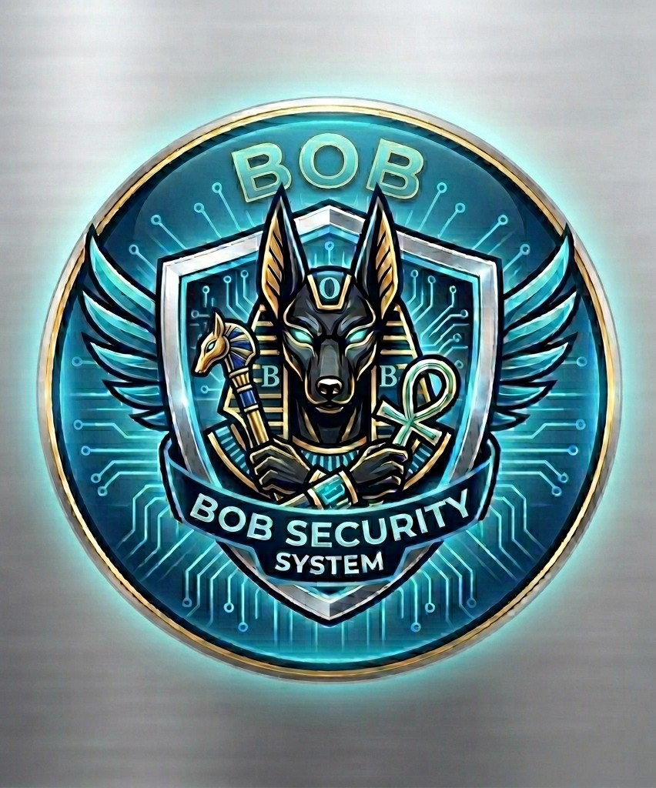

Public
البدء المجاني: الحساب، حالة الجهاز، الإرشادات والتنبيهات والدعم ضمن القدرات المتاحة.

BOB SECURITYمن تسجيل الجهاز وفحص قدراته إلى إدارة الحوادث والاسترداد والأدلة. كل وظيفة تعمل ضمن صلاحيات Android المصرح بها، دون وعود بتحكم غير مدعوم.
جرّب واجهة تطبيق الهاتفجرّب لوحة الويبالبدء المجاني: الحساب، حالة الجهاز، الإرشادات والتنبيهات والدعم ضمن القدرات المتاحة.
حماية شخصية متقدمة وفق صلاحيات المستخدم والجهاز. إدارة الباقة العائلية للبالغين دون مراقبة أجهزة الأعضاء.
إدارة أجهزة المؤسسات المؤهلة والمسجلة رسميًا في Android Enterprise، وفق عقود الإدارة والسياسات المعتمدة.
لا يُنفّذ أي أمر فعلي إلا بعد فحص القدرة والتفويض وإعادة التحقق على الجهاز. قد تظهر حالات UNSUPPORTED أو DEGRADED أو NONCOMPLIANT بدل نجاح غير مثبت. طلب حذف الحساب وتغيير الموافقات ضمن مسارات المنتج، ولم تُربط هذه المعاينة بخدمات حقيقية.
لوحات المستخدم والإدارةتطبيق الهاتف